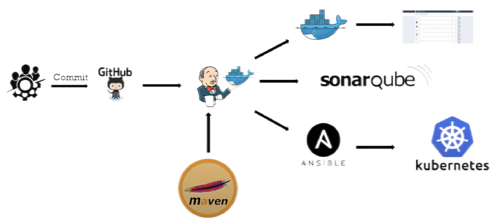
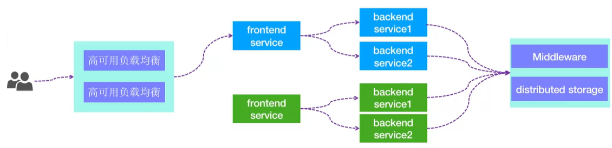
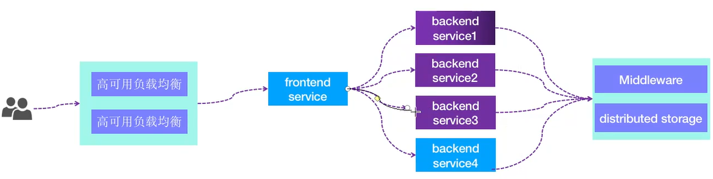

Jenkins 简介
-
是一个 Java 写的，开源的持续部署工具，https://www.jenkins.io/zh/。
-
Jenkins的前身是Hudson，Hudson是基于java语言开发。需要 Java 11。
-
Hudson由Sun公司在2004年立项，第一个版本于2005年发布。
-
2007年开始Hudson逐渐取代早期其他的开源构建工具，成为主流工具。
-
2011年1月11日，原Hudson主要项目维护者要求投票将项目名称从“Hudson”改为“Jenkins”，并在2011年1月29日，该建议得到社区投票的批准后创建了Jenkins项目。
-
后Jenkins项目得到了全球开发爱好者的拥护并快速迭代，2013年后就全面超越了Hudson项目。
-
安装简单支持rpm/deb包、war包等多种安装方式。
-
图形化的界面，简单易用、方便维护、运行稳定。
-
支持 master/slave 工作模式，分布式构建实现性能横向扩容。
-
支持插件化，可通过插件支持 gitlab、svn、webhook 等功能、方便功能扩展及二次开发。
-
支持构建成功或失败的邮件通知。
-
支持pipline，实现流水线形式的可视化代码部署流程。
-
可以结合SonarQube等第三方工具实现代码质量检测并生成可视化报告。
-
丰富的使用案例，大量的使用文档及解决方案。
-
Jenkins 功能特点：
- 安装简单
- 强大的图形功能
- 支持构建Email通知
- 支持分布式构建
- 插件化便于二次开发及功能扩展
- 支持piplinie流水线

Jenkins分布式构建：
- jenkins master 节点负责 job 的创建、管理与触发。
- job 在执行时分配给特定的 jenkins slave 节点执行
- job 执行成功后由 jenkins master 发送邮件通知。
- 基于 jenkins 分布式架构可以快速横向扩容 jenkins 的构建并发能力。

常见的业务环境：
-
开发环境(Development、dev环境)：
- 软件研发工程师(Software Development Engineer)专用于代码开发的机器，必须本地办公 PC 或公司会给程序员分配虚拟机专用于本人做代码开发。
-
测试环境(Test)：
- 首次将代码合并及构建后进行统一的集中功能与性能等意向的专用测试环境，会存在一些未知的bug(漏洞、功能缺陷)等需要迭代修复，不对用户开放。
-
UAT环境(User Acceptance Test)：
- 用户接受度测试,即最终的验收合格测试环境，UAT环境主要用于测试或交付人员进行验收测试，也不对客户开放。
-
灰度环境(preview、pre环境)：
- 灰度环境,是生产环境的一小部分服务器，外部用户可以访问,主要在此环境对新版本进行小规模发布与测试，即便有bug或功能缺陷问题也只影响一小部分用户。
-
生产环境：
- 正式对用户开放的业务环境，是经过层层测试的最终相对稳定的代码程序。
常见的代码部署方式：
-
开发自己ssh到服务器上传：
- 最原始的部署方式，效率低而且容易出错
-
开发给运维手动上传：
- 运维自己手动部署
-
运维使用脚本复制：
- 手动批量部署，需要到时候手动执行并验证
-
结合web界面一键部署：
- 自动部署、自动验证、自动上线
常见的代码部署方案：
-
蓝绿部署：
- 蓝绿部署是指有两套一样的业务环境，然后有一套在线上运行，一套是离线的。在进行代码部署的时候不停止老版本代码(完全不影响上一个版本访问)，而是在另外一套离线环境部署新版本然后进行测试，在测试通过后再将用户请求流量切到新版本，其特点为业务无中断，升级风险相对较小。

-
A/B测试：
- A/B测试也是同时运行两个业务环境，但是蓝绿部署完全是两码事，A/B 测试是用来测试应用功能表现的方法，例如业务功能可用性、 业务受欢迎程度等等，蓝绿部署的目的是安全稳定地发布新版本应用，并在必要时回滚，即和蓝绿部署的区别是蓝绿部署是一套正式环境环境在线，而A/B测试是两套环境同时在线并进行(内部团队竞争)。
-
滚动发布：
- 滚动发布一般是分几批次部署，先取出一个或一部分服务器从负载均衡下线、然后逐个停止服务，然后逐个执行更新，最后更新完成后、再重新添加到 负载均衡使用，周而复始，直到集群中所有的实例都更新成新版本。

-
金丝雀/灰度：
- 金丝雀发布也叫灰度发布，是指从当前版本升级到新版本，能够实现平滑升级和过渡的一种发布方式，灰度发布是增量发布的一种类型，灰度发布是在 原有版本可用的情况下，同时部署一个新版本应用作为“金丝雀”(小白鼠)，测试新版本的性能和表现，以保障整体系统稳定的情况下，尽早发现、调整问题。